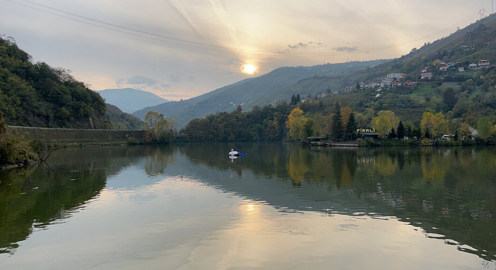
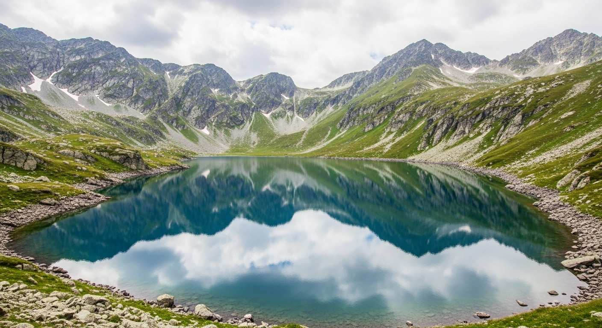
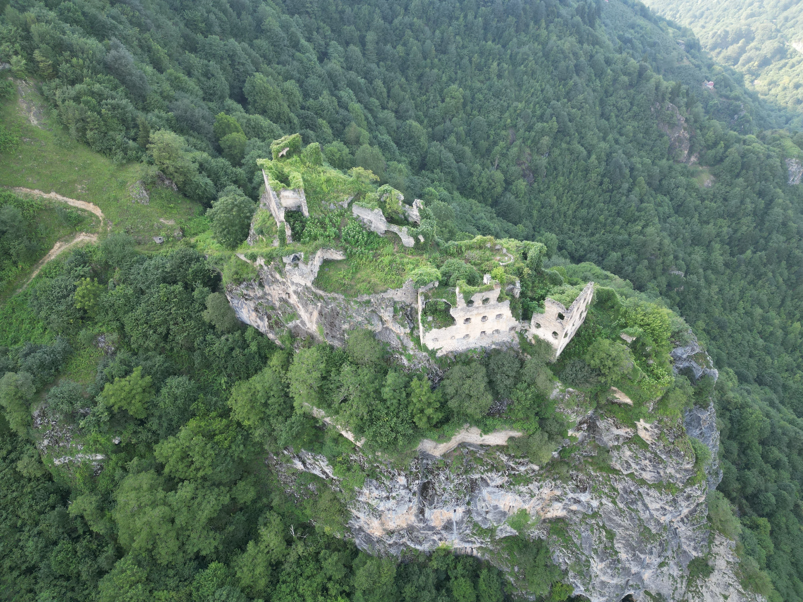

Karadeniz'in Kalbi: Trabzon
Trabzon, 824 bini aşan nüfusuyla Karadeniz Bölgesi'nin en kalabalık ve en önemli şehirlerinden biridir. Yeşilin ve mavinin her tonunu barındıran bu eşsiz şehir, binlerce yıllık tarihi, zengin kültürü ve doyumsuz manzaralarıyla ziyaretçilerini büyüler.
ℹ️ Hızlı Bilgiler
- 👥 Nüfus: Yaklaşık 824,000
- 📍 Bölge: Doğu Karadeniz
- 🚗 Plaka Kodu: 61
- ⚽ Takım: Trabzonspor
🧭 Gezilecek Başlıca Yerler
- 🌲 Uzungöl ve Haldizen Yaylası
- 🏛️ Sümela Manastırı ve Altındere Vadisi
- 🕌 Trabzon Ayasofya Camii
- ⛰️ Çal Mağarası ve Boztepe Manzarası
Şehirden Kareler
Görselleri tam boyutta görmek için üzerlerine tıklayabilirsiniz.

Uzungöl'ün Doğal Güzelliği

Doğanın Gizemli Harikası - Çal Mağarası

Tarihin İzlerini Taşıyan Ayasofya Camii

Bulutların Üzerindeki Yaylalar

Sera Gölü'nün Huzurlu Atmosferi

Yükseklerde Saklı Bir Cennet - Aygır Gölü

Yüzyıllara Meydan Okuyan Yapı - Kuştul Manastırı
Değerlerimiz

Kültürel Mirasımız: Sümela Manastırı
Maçka ilçesindeki Altındere Vadisi'ne hakim Karadağ'ın eteklerinde sarp bir kayalık üzerine kurulan Sümela Manastırı, Trabzon'un ve Türkiye'nin en önemli kültürel miraslarından biridir.
Halk arasında "Meryem Ana" adıyla da bilinen manastır, vadiden yaklaşık 300 metre yükseklikte yer almaktadır. Eşsiz freskleri, su kemerleri, kütüphanesi ve öğrenci odalarıyla mimari bir şaheser olan bu yapı, yüzyıllar boyunca bölgenin dini merkezi olmuştur.

Şehrin Gururu: Trabzonspor
Trabzon şehri dendiğinde akla ilk gelen değerlerden biri şüphesiz Trabzonspor'dur. 1967 yılında kurulan kulüp, İstanbul hegemonyasını yıkan ilk Anadolu takımı olarak Türk futbol tarihine adını altın harflerle yazdırmıştır.
Bordo-Mavili renkleriyle "Karadeniz Fırtınası" lakabını alan takım, şehrin tutkusu, heyecanı ve en büyük birleştirici gücüdür. Trabzon'da futbol sadece bir spor değil, köklü bir yaşam biçimidir.